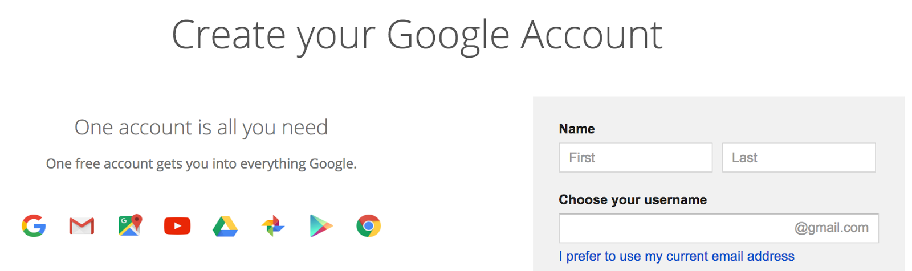

Reasons to Replace PowerPoint with Google Slides
Google Slides provides a new way to present information. Unlike PowerPoint which must purchase through Microsoft, and needs to pay annually, Google Slides is totally free. There has no other extra charge when using Google Slides, all you have to do is to create a Google account. Here is the link for setting up a Google account:
https://accounts.google.com/SignUp?hl=en. For those of you who already have the Google account, you can access to Google Slides immediately. Here is the link to access to Google Slides: https://www.google.com.au/slides/about/.
Meanwhile, Google Slides provides the built-in feature of sharing, which means that you do not need to conduct the sharing process in a traditional way, that is, saving your slides, opening your email application, uploading the saved slides, and sending the slides to others. By using Google Slides, what you need to do in this process is to click the button of Share, send, and then Done! If you face with a high workload, then Google Slides is the best tool to save your time and energy.

In terms of the accessibility, Google Slides is a web-based application. To be more exact, it enables people to have the access to it at any time at any places as long as there is a Internet Connection. In the era of mobile devices, modern people tend to access to information through their portable devices, such as smart phone, tablets, etc. If they want to use PowerPoint, they have to install the specific application in their devices, which is annoying. Fortunately, with the advent of Google Slides, they can access to the slides directly without installing any applications
More importantly, Google Slides has several innovative features. For example, the new Question & Answer feature that allows audiences to interact with a speaker through a link looks like a promising feature to hold audience engagement for those who make public presentation.